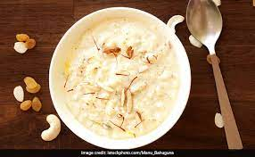

Kheer

Description
Kheer is a very common and tasty Indian dessert dish. Its
rich and creamy texture makes it enjoyable for everyone at
any occation. Originally from North India, its simple handful
of ingredients make it easy for anyone for anyone to cook and enjoy!
Ingredients
- Rice, ideally basmati rice: 1 cup.
- Milk, ideally whole milk: 4 cups.
- Sugar, 4 to 6 tablespoons
Steps:
- Wash the rice and let them soak in water for 30 mins.
- Add milk to a pot and let it boil.
- Once boiling, add soaked rice.
- keep stirring at a low to midium flame.
- Cook til the rice are soft, check by crushing with spoon if its mushy
- Add sugar.
- Lower the flame til it thickens.
- Once its thick and runny, shut off the heat.
- Let it cool and enjoy!